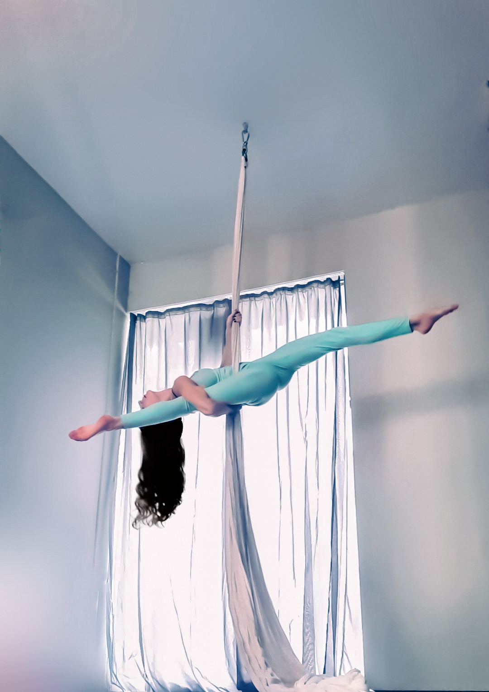
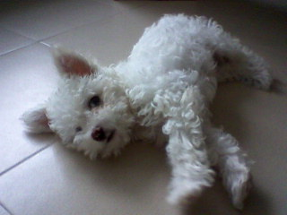

Въздушна акробатика на воал:
|  | Воали – Въздушният танц е широко понятие за съвременен танцов стил, който включва използването на окачено оборудване. Въздушната акробатика e едно от най-популярните циркови изкуства, практикувани по цял свят. Занимaнията по въздушна акробатика на воали изискват висока степен на сила, гъвкавост, баланс и най-вече кураж и желание да се впуснете в това нестандартно изживяване, преодоляващо гравитацията и опълчващо се срещу законите на физиката. |
Въздушна акробатика на обръч:
|
Обръч – това е една от най-запомнящите се разновидности на въздушната гимнастика, комбинираща бързина, издръжливост, сила, баланс на тежестта и гъвкавост – всичко това е съчетано в една тренировка, придружено с полет и пируети във въздуха. Малцина смятат, че са в състояние да се научат да го практикуват, но за осмелилите се да опитат, първите резултати са видими след броени тренировки. |
Вертикална акробатика:
 |
Танцът на пилон е съчетание на полезното с приятното. Той ви помага да поддържате тялото си в добра форма, да имате добър тонус, да се справите с излишните килограми и да увеличите своята мускулна маса. Това е тренировка за всички мускули, особено за гърба, рамената и ръцете. |
Моето куче:
| Това е Роки, на 12 години. Той е френска болонка и любимите му занимания са игра с кокал, разходки в парка и игра с други кучета. |  |